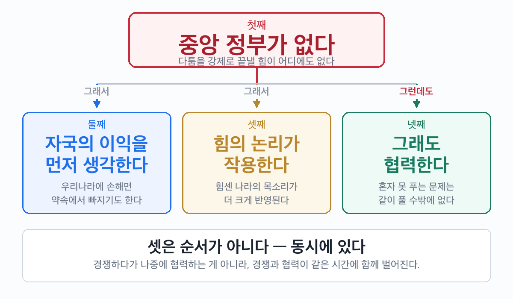

세계에는 경찰이 없는데, 왜 세상은 안 무너질까?
🎙️ 이 차시의 축은 하나다 — 중앙 정부가 없다는 것이 뿌리이고, 나머지 특성은 거기서 따라온다. 교과서는 넷을 나란히 늘어놓지만, 학생에게는 구조로 보여 줄 때 남는다.
- 국제 사회의 의미를 설명할 수 있다.
- 국제 사회의 네 가지 특성을 사례와 연결할 수 있다.
| 용어 | 쉽게 말하면 | 한자 자원(字源) | 문장 속 확인 |
| 주권(主權) | 자기 나라 일을 스스로 정하는 힘 | 주인 主 + 권세 權 | "작은 나라도 주권을 가진 어엿한 한 나라다." |
| 권위(權威) | 남을 따르게 하는 힘 | 권세 權 + 위엄 威 | "국제 사회에는 모두를 따르게 할 권위가 없다." |
| 공존(共存) | 서로 도우며 함께 있는 것 | 함께 共 + 있을 存 | "다르지만 공존하는 법을 찾아야 한다." |
📕 교과서 날개 주석 원문 — 주권 국가: "국제 사회를 구성하는 기본 단위로, 각국은 독립적인 주권을 가지며 평등한 지위를 인정받음." / 권위: "남을 지휘하거나 통솔하여 따르게 하는 힘" / 공존: "서로 도와서 함께 존재하는 것" — 천재교육 사회②(구정화) 113쪽
📕 교과서 112쪽 · 배정 시간 6분
답: 정답이 하나가 아니다. 삽화 셋은 ①수입품·외국 기술과 부품 ②주변의 외국 사람·해외 관광과 유학 ③뉴스와 인터넷으로 즉시 전달되는 각국 사건이다. 셋 중 하나를 골라 "국경을 넘어 왔다"는 사실이 드러나면 인정한다.
💡 교과서가 제시하는 답 예시: 해외 사이트 구매, 요리 경연 대회의 외국인 요리사, 송도 국제도시와 제주 국제 자유 도시, 외국 대학 분교의 신입생 모집, 국제 면허증 발급, '세계 시민'이라는 말.
자료 해설로 쓸 것 — 자몽 수입국이 1995년에는 미국뿐이었으나 지금은 남아프리카 공화국·이스라엘·캐나다 등으로 다양해졌다. 이스라엘은 우리나라에서 주로 가전제품을 수입하는데 최다 품목은 텔레비전이다.
📕 교과서 112쪽 · 배정 시간 7분
국제 사회란 여러 나라가 서로 교류하고 의존하면서 공존하는 사회다.
이 사회를 이루는 기본 단위는 주권 국가다. 크든 작든 자기 나라 일을 스스로 정할 힘을 가지며, 국제 사회에서 평등한 지위를 인정받는다.
📕 교과서 원문: "국제 사회란 국가들로 이루어진 사회로, 여러 나라가 서로 교류하고 의존하면서 공존하는 특성을 가지고 있다. 현대 사회는 세계화가 급속히 진전되면서, 전 지구적 차원의 국제 사회가 형성되었다. 이에 따라 오늘날에는 정치·경제·문화를 포함한 많은 부문에서 교류가 폭넓게 이루어지고 있다." — 천재교육 사회②(구정화) 112쪽
답: 평등한 지위. "각국은 독립적인 주권을 가지며 평등한 지위를 인정받음"에서 그대로 찾을 수 있다.
💡 여기서 한 번 짚어 줄 것 — 평등한 지위를 인정받는다는 말과, 실제로 영향력이 같다는 말은 다르다. 3단계·4단계의 '힘의 논리'가 바로 이 간극이다. 학생이 "그럼 왜 강대국 말이 더 통해요?"라고 물으면 잘 따라온 것이다.
📕 교과서 113쪽 · 배정 시간 8분
국제 사회에는 그런 중앙 정부가 없다. 나라들 위에 서서 명령할 존재가 아무도 없다.
📕 교과서 원문: "국제 사회에는 개별 국가를 강제할 권위와 힘을 가진 중앙 정부가 없다. 이로 인해 국가 간에 분쟁이 일어날 경우 해결이 어렵다." — 천재교육 사회②(구정화) 113쪽
답: 현실적으로 강력한 제재를 하기 어렵기 때문이다. 날개 원문 — "국제 사회에도 국가 간의 관계를 규율하는 법이 존재하지만, 상대적으로 힘이 강한 국가가 국제 사회의 규범을 어겼을 때는 현실적으로 강력한 제재를 하기 어려움."
💡 여기가 이 차시의 분기점이다. 학생이 흔히 "국제법이 없다"고 잘못 적는다. 법은 있다 — 없는 것은 어겼을 때 집행할 힘이다. 이 구분을 못 잡으면 6-4차시(협력·외교)에서 "약속이 왜 필요하냐"는 질문에 답을 못 한다.
국제 정치학에서는 이 상태를 무정부성이라 부른다. 세계 정부가 없으므로 각국이 스스로 자기 안전을 챙길 수밖에 없고, 그 결과 힘의 논리가 작동한다는 설명이다. 지도서 참고 문헌인 존 베일리스 외, 『세계 정치론』, 을유문화사, 2009에서 다루는 기본 전제이므로 심화 질문이 나오면 이 선까지 답해 주면 된다.

| 특성 | 이런 모습으로 나타난다 | |
| 첫째 | 중앙 정부가 없다 | 다툼이 나도 강제로 끝낼 힘이 없다 |
| 둘째 | 자국의 이익을 먼저 생각한다 | 손해라고 판단하면 약속에서 빠지기도 한다 |
| 셋째 | 힘의 논리가 작용한다 | 힘센 나라의 목소리가 더 크게 반영된다 |
| 넷째 | 그래도 협력한다 | 혼자 못 푸는 문제는 같이 풀 수밖에 없다 |
📕 교과서 원문: "국제 사회를 구성하는 국가들은 자국의 이익을 우선으로 추구하는 경향이 강하다. 국제 사회에는 힘의 논리가 작용하여 강대국의 영향력이 매우 크다. 이러한 특성에도 불구하고 국제 사회는 공동의 문제를 해결하기 위해 상호 협력하기도 한다." — 천재교육 사회②(구정화) 113쪽
넷째가 앞의 셋을 지우는 것은 아니다. 경쟁하다가 나중에 사이좋아지는 순서가 아니라, 경쟁과 협력이 같은 시간에 함께 벌어진다.
기후 위기나 감염병처럼 한 나라가 아무리 애써도 못 푸는 문제가 있기 때문이다.
💡 도식의 화살표 라벨을 그대로 읽어 줄 것. 둘째·셋째로 가는 화살표는 「그래서」, 넷째로 가는 화살표만 「그런데도」다. 교과서가 "이러한 특성에도 불구하고"라고 쓴 것을 그림으로 옮긴 것이라, 우리 해석을 교과서 위에 덮어쓰지 않는다.
다만 한 걸음 더 들어가면 강제할 중앙 정부가 없기 때문에 오히려 스스로 약속해야 한다는 읽기도 가능하다. 이 해석은 6-4차시(협력과 외교)에서 꺼내는 편이 낫다. 지금 꺼내면 넷을 구분하는 이번 차시 목표가 흐려진다.
| 사례 | 답 | 왜 |
| 파리 기후 변화 협정 (2015년·195개국) | 협력 | 한 나라가 아무리 온실가스를 줄여도 기후는 안 바뀐다. 공동의 목표를 세우고 정보를 공유하며 역할을 나눈 사례 |
| 영국의 유럽 연합 탈퇴 (2016년) | 자국의 이익 | 난민 배정 등 EU 의회의 결정이 자국에 불리하다고 판단해 탈퇴를 선택했다 |
| UN 안전 보장 이사회 거부권 | 힘의 논리 | 15개 회원국 중 5개 상임이사국(미국·영국·프랑스·중국·러시아)만 거부권을 가지며, 한 나라만 반대해도 안건이 부결된다 |
📕 교과서가 제시한 답 문구 — 자국 이익: "국제 사회는 지속 가능한 발전의 이념보다 자국의 이익을 우선하여 갈등과 분쟁이 발생한다." / 힘의 논리: "국제 사회는 국력에 따른 힘의 논리가 작용하여 강대국이 더 많은 영향력을 행사한다." / 협력: "세계 각국은 평화, 안전, 환경 등을 위하여 공동의 목표를 세워 정보를 공유하고, 역할을 분담하며 협력한다." — 천재교육 사회②(구정화) 113쪽 스스로 탐구
⚠️ 교과서 안내의 기호 순서가 서술 순서와 어긋나 있다. 위 표의 연결이 내용 기준이므로, 학생이 기호로 헷갈려 하면 기호를 떼고 특성 이름으로 부르게 할 것.
💡 학생 오답 1위 예상 = 안보리 거부권을 '협력'으로 고르는 것. UN이라는 국제기구 이름 때문이다. "기구 안에서 벌어지는 일이라고 다 협력은 아니야 — 안에서 누가 더 센지를 보자" 로 되짚어 줄 것.
조사·발표로 넓힐 때 쓸 수 있는 교과서 예시 — 강대국 영향력: 중국의 압박으로 타이완이 올림픽에서 자국 국기를 쓰지 못한 사례 / 자국 이익 우선: 마스트리흐트 조약 체결 당시 덴마크와 프랑스의 반대 / 협력: 소말리아 해적 퇴치 연락 그룹, 세계 핵 테러 방지 구상, 핵 안보 정상 회의.
| 번호 | 문장 | 답 | 해설 |
| 1 | 국제 사회에는 나라 사이의 다툼을 강제로 해결해 주는 중앙 정부가 있다. | X | 첫째 특성. 강제할 권위와 힘을 가진 중앙 정부가 없다 |
| 2 | 국제 사회는 힘의 논리가 작용하여 상호 협력이 이루어지지 않는다. | X | 교과서 확인 콕 문항. 힘의 논리는 맞지만 그럼에도 협력은 이루어진다 |
| 3 | 크기가 작은 나라도 주권을 가지며 평등한 지위를 인정받는다. | O | 주권 국가 날개 주석 그대로 |
| 4 | 국제 사회는 경쟁을 먼저 하고 마지막 단계에 가서야 협력하는 순서로 움직인다. | X | 네 특성은 시간 순서가 아니다. 경쟁과 협력이 동시에 벌어진다 |
| 5 | 국제법이 있어도 힘이 강한 나라를 실제로 제재하기는 어렵다. | O | 국제법의 한계 날개 주석 |
💡 4번이 이 차시에서 가장 중요한 문항이다. 도식을 위에서 아래로 읽다 보면 학생이 시간 순서로 오해하기 쉬워서 일부러 넣었다. 틀린 학생이 많으면 도식 아래 문장을 같이 읽을 것.
오늘 배운 걸 안 보고 세 줄로 적어 보자. 틀려도 괜찮아 — 떠올리려고 애쓰는 그 순간에 머리에 박히는 거야.
✍️ 낱말 세 개가 아니라 문장 세 개로. 각 줄이 `~다.` 로 끝나게 쓰자.
1.
2.
3.
채점 관점 — 세 줄 안에 ①국제 사회의 의미(교류·의존·공존) ②중앙 정부가 없다 ③나머지 특성 중 하나가 각각 한 줄씩 들어오면 충분하다. 문장 형태로 썼는지를 본다. 낱말 나열은 다시 쓰게 할 것.
세계에는 경찰이 없다. 그런데도 195개 나라가 기후 협정에 서명했고, 대부분의 약속은 지켜진다. 강제할 사람이 없는데 왜 그럴까?
모범답안 예시 — 혼자서는 풀 수 없는 문제가 있기 때문이다. 기후 변화처럼 한 나라만 노력해서는 해결되지 않는 문제는 여러 나라가 공동의 목표를 세우고 역할을 나눌 때만 풀리므로, 강제하는 힘이 없어도 스스로 약속에 참여하게 된다.
채점 관점
- 상 — 넷째 특성(협력)을 근거로 들고, "혼자 못 푸는 문제"라는 이유까지 쓴 경우
- 중 — 협력한다는 사실은 썼으나 이유가 "사이가 좋아서" 같은 막연한 서술인 경우
- 하 — 특성과 연결하지 못하고 감상만 쓴 경우
🔑 이 물음이 단원 전체의 관통 질문이다. 6-6차시에서 시민 사회의 역할까지 배운 뒤 다시 물어 답을 갱신하게 한다.
- 교과서: 천재교육 사회②(구정화) 112~113쪽
- 지도서 참고 문헌: 존 베일리스 외, 『세계 정치론』, 을유문화사, 2009 / 유현석, 『국제 정세의 이해』, 한울아카데미, 2008